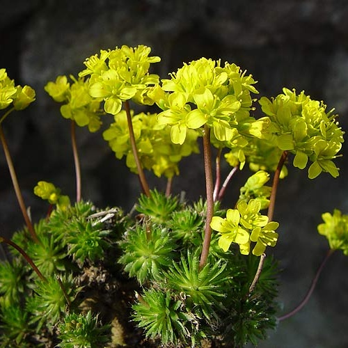

Draba aizoides
Common name
Yellow Whitlowgrass
Deutscher Name
Immergrünes Felsenblümchen
Family
Brassicaceae
Family common name
Mustard family
Blooms
February - August
Habitat
Rock crevices, scree and ridges. Stony, calcareous soils, 1500 to 3000 m.
Range Map